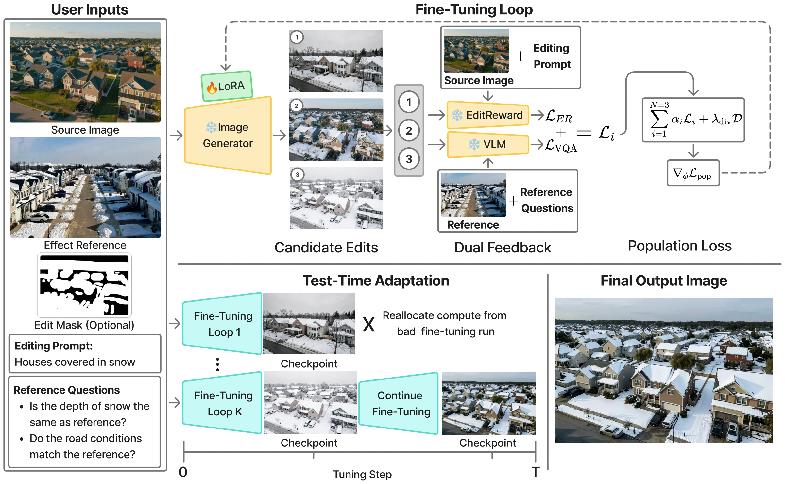

KINESYSTest-Time Adaptation for
Reference-Based Effect Editing in Images
Transfer and Preserve
Abstract
Visual effects are often easier to demonstrate via reference than to describe in words. We study effect-reference editing, where a reference image shows a desired visual effect and language identifies which properties should guide the edit. Existing single-pass editing techniques often fail to make fine-grained edits, resulting in subtle identity distortions or deviations from the reference effect. We introduce KINESYS, a test-time adaptation framework for effect-reference editing that combines reference-aware and source-aware feedback to transfer the desired effect while preserving the identity of the original shot. To ensure KINESYS can produce a diverse set of identity-preserving edits, we develop a robust optimization strategy in which the generative model is fine-tuned across multiple noise samples and optimization runs. Evaluation with VLM judges, source-preservation metrics (LPIPS, TPIPS), and a user study shows that KINESYS outperforms state-of-the-art image editors in source identity preservation; on effect transfer, it remains competitive with Nano Banana 2 and outperforms open-weight editors.
Effect Comparison
Loading effect comparisons…
How KINESYS works

Editing quality and source preservation
| Method | Automated judges | Identity preservation | |||
|---|---|---|---|---|---|
| Gemini ↑ | EditScore ↑ | EditReward ↑ | LPIPS ↓ | TPIPS ↑ | |
| Open-weight methods | |||||
| OmniGen2 | 4.950 | 7.530 | −0.018 | 0.753 | 0.599 |
| ACE++ | 4.980 | 5.950 | −0.503 | 0.795 | 0.500 |
| ICEdit | 5.930 | 6.910 | −0.097 | 0.429 | 0.632 |
| Dual-Process | 7.090 | 7.930 | 0.212 | 0.577 | 0.615 |
| Qwen-Image-Edit | 7.670 | 8.310 | 0.435 | 0.645 | 0.599 |
| FLUX.2 Klein 4B | 7.900 | 8.680 | 0.501 | 0.579 | 0.640 |
| Step1X-Edit | 8.220 | 8.800 | 0.666 | 0.449 | 0.724 |
| Proprietary methods | |||||
| Nano Banana 2 | 8.910‡ | 9.060 | 0.738 | 0.429 | 0.696 |
| KINESYS (Ours) | 8.830 | 8.950 | 1.007† | 0.377 | 0.731 |
Blind human evaluation
User study
vs. Nano Banana 2
Identity preservation
- KINESYS
- 45.3%
- Tie / unclear
- 30.0%
- Baseline
- 24.7%
Effect transfer
- KINESYS
- 48.2%
- Tie / unclear
- 9.8%
- Baseline
- 42.1%
vs. Step1X-Edit v1.2
Identity preservation
- KINESYS
- 53.6%
- Tie / unclear
- 25.5%
- Baseline
- 20.9%
Effect transfer
- KINESYS
- 69.8%
- Tie / unclear
- 8.1%
- Baseline
- 22.0%
Acknowledgments
This work was partly supported by NCInnovation under the project “KINESYS+ATLAS: AI and Synthetic Data for Critical Applications”.